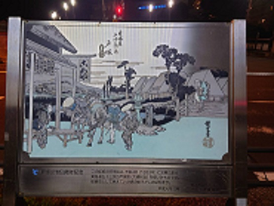

これは私の家の近くの道路の近くに立っている看板です。
時間はあえて夜に撮りました。この看板は夜になると発光するため、遠くからでもはっきりと見えるようになっています。
この看板はサッカースクールのスポンサーが提供しているものです。
この看板は誰もが知っているコンビニの一つであるセブンイレブンの看板です。
この看板も夜になると光ります。そのため遠くから視覚的にどんな店があるのかが分かるようになっています。
7のマークなので遠くからでもセブンイレブンと分かるのはブランド力を表していると思いました。

最後の写真はかってこの地が宿場町として栄えていたことを示す看板になっています。
この絵は１８３３年に安藤広重こと歌川広重が描いたものであり、戸塚区５０周年の記念にこれが建てられました。